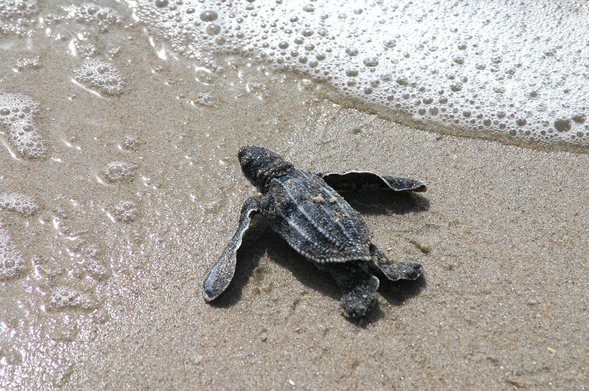
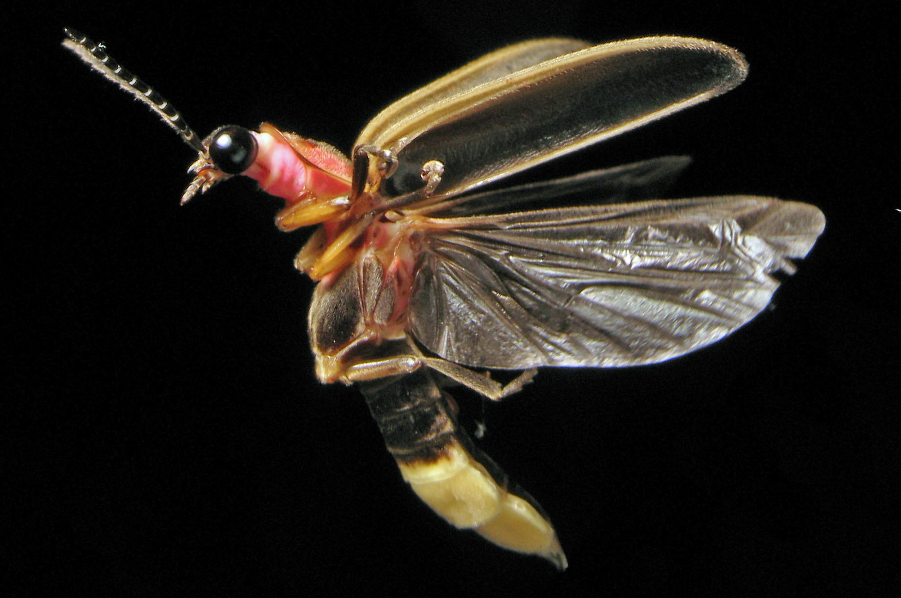
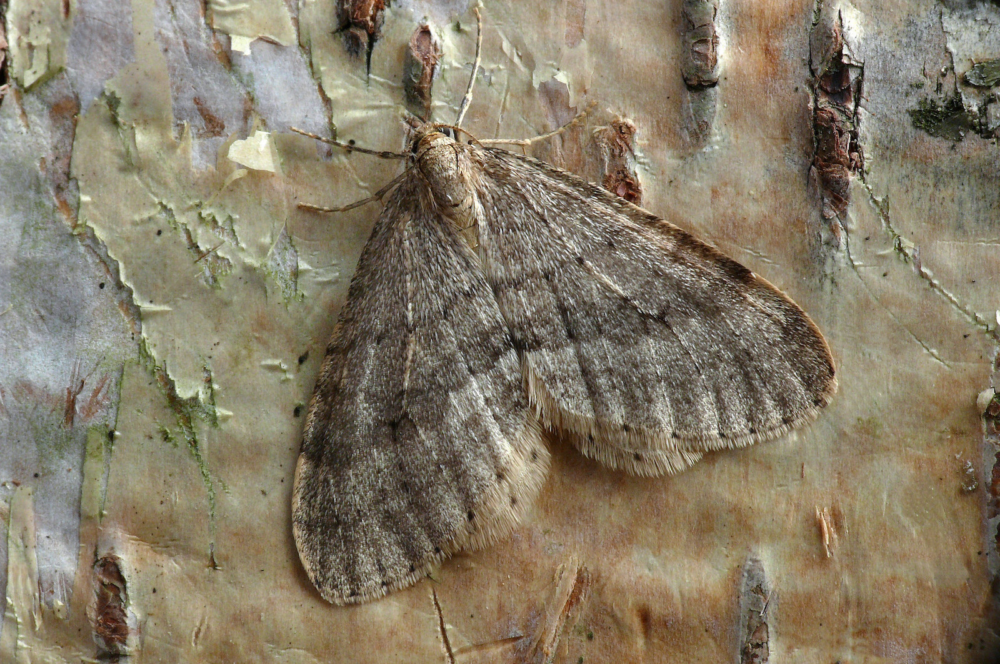

A meteor streaks across the sky above Spruce Knob, West Virginia, during the Perseid meteor shower in August 2021. Photo by NASA/Bill Ingalls
Too much light threatens environment and health, studies show
By Hunter Savery - April 7, 2023
WASHINGTON – Every year it is becoming more and more difficult to see the stars. This will come as no surprise to residents of cities like Washington and Baltimore, where it is often difficult to see more than the moon.
Although it may not garner the same popular attention as other forms of environmental degradation, light pollution has far-reaching impacts for Earth’s ecosystems and human health.
Astronomers at the National Science Foundation’s NOIRLab (which stands for National Optical-Infrared Astronomy Research Laboratory) estimate that light pollution levels are increasing by 10% every year. Children born today in a city where 250 stars can be seen at night will only be able to see 100 by the time they turn 18.
Connie Walker, a scientist at NOIRLab, told Capital News Service that increasing light pollution represents a lost cultural heritage.
“Just think about (Gustav) Holst in creating the musical composition, ‘The Planets’, or (Vincent) Van Gogh, who did ‘The Starry Night.’ I mean, this is not just astronomy, it’s art. It’s if we basically cut ourselves off from access to the night sky, we’re really damaging the opportunities for future generations and the inspiration that provides,” Walker said. “And so it’s like cutting off an appendage or something, we’re losing part of ourselves. So it’s really a kind of imperative for us to take action and try to protect the night sky.”
What some may not realize when viewing paintings like “The Starry Night” or “The Night Cafe” is that during Van Gogh’s time the Milky Way really could be seen from the city streets at night. This is how it was for most of human history; change came with the explosion of electric lighting in the 20th century.
Light Pollution Impacts Health, Nature
However, light pollution is a serious threat beyond cultural heritage. It disrupts our sleep cycles and circadian rhythms, which can put individuals at greater risk of developing a number of cancers, according to researchers at Harvard University.
Sleep deprivation also interferes with people’s work and social lives and puts individuals at increased risk for many illnesses including heart disease, kidney disease, high blood pressure, obesity and depression to name a few.
For animals, the consequences of light pollution can be even more dire.
Many animals have evolved to use the moon and stars to guide their way in the night. Sea turtle hatchlings use the moonlight to find their way to the ocean, but in light-polluted areas, the newborns become disoriented and may actually crawl inland. The Florida Fish and Wildlife Conservation Commission estimates that light pollution results in thousands of sea turtle deaths every year.

A leatherback sea turtle hatchling on a Florida beach. Photo by Karen Parker, Florida Fish and Wildlife, CC BY-ND 2.0

Photinus pyralis, the common eastern USA firefly. Photo by Terry Priest, CC BY-SA 2.0 (cropped from original)

Operophtera fagata, the northern winter moth, on a birch tree. Photo by
Patrick Clement, CC BY 2.0 (cropped from original)
Many communities in the southeastern United States, from Florida to the Carolinas, have ordinances requiring people living on the coast to turn off lights during sea turtle nesting season.
Light pollution is also a likely culprit in what some scientists have called the "Insect Apocalypse.”
In recent years, global insect populations have plummeted, with as many as 40% of all species around the globe experiencing declines. For example, species that rely on bioluminescence, like fireflies, are unable to find mates among all of the competing lights.
Other species that rely on the moon and stars for guidance, like moths, can spend the entire night in disoriented wandering. Some species mistake light bouncing off pavement for the surface of a body of water and mistakenly lay their eggs in the street.
Measuring and Reducing Light Pollution
One of the challenges to assessing light pollution’s growth is that it doesn’t show up well in satellite data.
It is difficult to do longitudinal studies because of the dramatic changes in satellite imaging quality over the years. Even the modern sensors are largely unable to pick up the blue light that is the most biologically disruptive component of light pollution.
How dark is your night sky?
By Sara Mitchell
Each year, citizen scientists around the world measure the brightness of their night skies and share their observations through Globe at Night, a program jointly sponsored by the U.S. National Science Foundation's NOIRLab and DarkSky International.
No special tools are required to contribute your data — all you need is a smartphone, tablet, or computer. You'll be asked about the time, date, and location of your observation, as well as an estimate of the darkness and conditions of your sky that night. Optionally, you can make a more accurate measurement with a handheld sky quality meter or smartphone app.
Find out more about the program and share your observations on the Globe at Night website.
Over 277,000 measurements have been submitted since the program began collecting data in 2006. The submissions have been compiled into interactive maps and datasets available to the public that give a better snapshot of light pollution than standard satellite imagery.
That’s what we do in our homes, right? We don’t have bare light bulbs over the dining room table, we have lamps shades and covers.
— Jim Dougherty, International Dark-Sky Association
Reducing light pollution is far from a Herculean task, according to Jim Dougherty, an environmental attorney and president of the International Dark-Sky Association’s D.C. Chapter. One easy fix is making sure that lights are properly covered so that the light is aimed down and not shooting off towards the night sky.
“Here in D.C., the light fixture that we love to hate is the globe, which sends maybe 70% of its light straight up into the sky and serves no purpose whatsoever,” Dougherty told CNS. “That’s what we do in our homes, right? We don’t have bare light bulbs over the dining room table, we have lamps shades and covers.”
Alongside better covered lights, the IDA advocates for dimmer and warmer lights overall. While some cities such as Pittsburgh have moved towards dimmer lights, Baltimore has been growing brighter with an increased number of electronic billboards.
A quick overview of light pollution, its causes, and its impact on our health. Video by National Geographic
In Washington last month, the Smithsonian Institution’s National Museum of Natural History launched an exhibit titled "Lights Out: Recovering Our Night Sky.” The temporary exhibit features over 100 photographs, 250 objects and interactive experiences underscoring the importance of nighttime darkness.
For many people, brighter streets are associated with safety and crime prevention.
“That’s a common reaction. And there’s very little truth to it,” Dougherty said. In fact, studies have shown that brighter streets have little impact on crime. One study out of Chicago actually found that increasing the brightness of alleyways corresponded with a significant increase in crime.